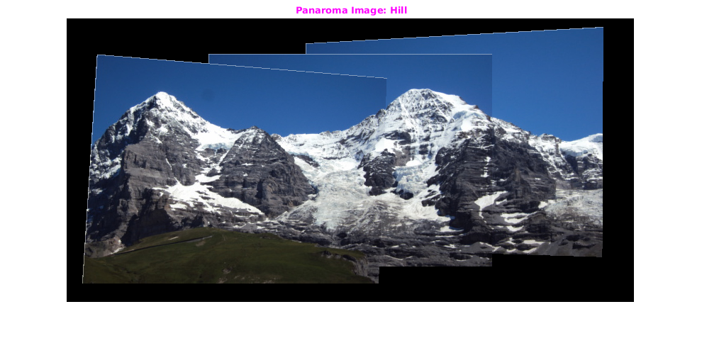
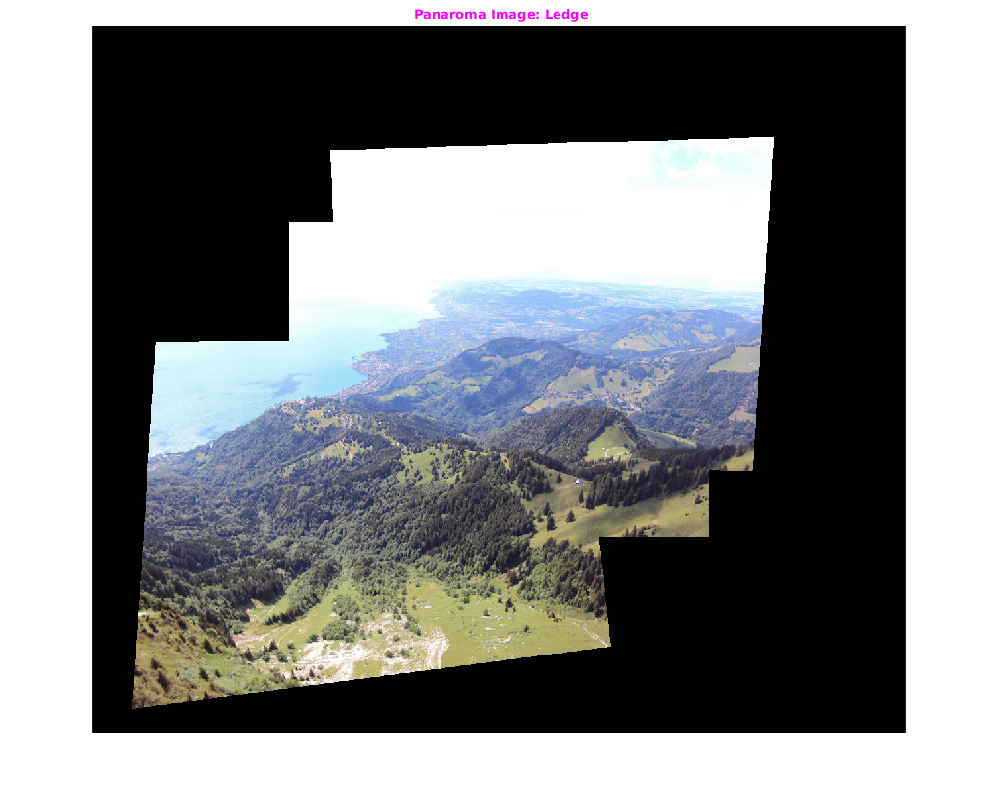
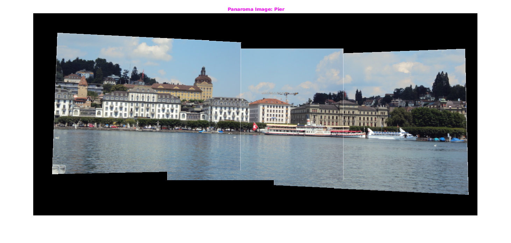
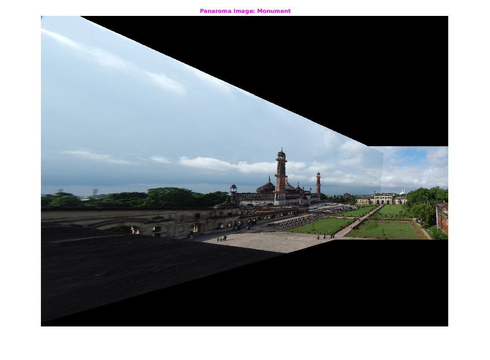

Panaroma
Contents
Assignment2-4
Rollno: 163059009, 16305R011, 16305R001
1. Hill Panaroma
tic filepath='../input/hill/'; img1=imread(strcat(filepath,'1.JPG')); img2=imread(strcat(filepath,'2.JPG')); img3=imread(strcat(filepath,'3.JPG')); padding=[50,200]; ransacThershold=2; ransacInter=500; % Creating Panaroma for Hill Image fprintf('\n** Creating Panaroma for Hill Image **\n'); [outImg]=panaroma({img1,img2,img3},padding,ransacThershold,ransacInter); figure('name','Panaroma Image'); imshow(uint8(outImg)); title('\fontsize{10}{\color{magenta} Panaroma Image: Hill}'); toc
** Creating Panaroma for Hill Image ** Finding keypoints... 1403 keypoints found. Finding keypoints... 1644 keypoints found. Found 557 matches. Finding keypoints... 1644 keypoints found. Finding keypoints... 1611 keypoints found. Found 763 matches. Elapsed time is 19.018307 seconds.
2. Ledge Panaroma
tic filepath='../input/ledge/'; img1=imread(strcat(filepath,'1.JPG')); img2=imread(strcat(filepath,'2.JPG')); img3=imread(strcat(filepath,'3.JPG')); padding=[300,300]; ransacThershold=2; ransacInter=500; % Creating Panaroma for Ledge Image fprintf('\n** Creating Panaroma for Ledge Image **\n'); [outImg]=panaroma({img1,img2,img3},padding,ransacThershold,ransacInter); figure('name','Panaroma Image: Ledge'); imshow(uint8(outImg)); title('\fontsize{10}{\color{magenta} Panaroma Image: Ledge}'); toc
** Creating Panaroma for Ledge Image ** Finding keypoints... 4767 keypoints found. Finding keypoints... 3127 keypoints found. Found 1004 matches. Finding keypoints... 3127 keypoints found. Finding keypoints... 1698 keypoints found. Found 778 matches. Warning: Image is too big to fit on screen; displaying at 67% Elapsed time is 67.219302 seconds.
3. Pier Panaroma
tic filepath='../input/pier/'; img1=imread(strcat(filepath,'1.JPG')); img2=imread(strcat(filepath,'2.JPG')); img3=imread(strcat(filepath,'3.JPG')); padding=[100,380]; ransacThershold=2; ransacInter=518; % Creating Panaroma for Pier Image fprintf('\n** Creating Panaroma for pier Image **\n'); [outImg]=panaroma({img1,img2,img3},padding,ransacThershold,ransacInter); figure('name','Panaroma Image: Pier'); imshow(uint8(outImg)); title('\fontsize{10}{\color{magenta} Panaroma Image: Pier}'); toc
** Creating Panaroma for pier Image ** Finding keypoints... 1976 keypoints found. Finding keypoints... 1514 keypoints found. Found 408 matches. Finding keypoints... 1514 keypoints found. Finding keypoints... 1539 keypoints found. Found 369 matches. Elapsed time is 35.716525 seconds.
4. Monument Panaroma
tic filepath='../input/monument/'; img1=imread(strcat(filepath,'1.JPG')); img2=imread(strcat(filepath,'2.JPG')); padding=[0,0]; ransacThershold=2; ransacInter=660; % Creating Panaroma for Monument Image fprintf('\n** Creating Panaroma for monument Image **\n'); img1=padarray(img1,[1200,2000],'pre'); img2=padarray(img2,[1200,2000],'pre'); img1=padarray(img1,[650,0],'post'); img2=padarray(img2,[650,0],'post'); [outImg]=panaroma({img1,img2},padding,ransacThershold,ransacInter); figure('name','Panaroma Image: Monument'); imshow(uint8(outImg)); title('\fontsize{10}{\color{magenta} Panaroma Image: Monument}'); toc
** Creating Panaroma for monument Image ** Finding keypoints... 2906 keypoints found. Finding keypoints... 4832 keypoints found. Found 511 matches. Warning: Image is too big to fit on screen; displaying at 33% Elapsed time is 184.500215 seconds.